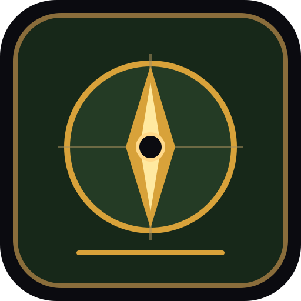

Adventure first
The game is designed to be enjoyable as a fantasy game on its own. Optional play notes can help players name a pattern, plan, or debugging idea after a run; no quiz or lesson is required.

Code Quest LabFantasy adventure with optional learning supportAbout the game
Code Quest Lab is a touch-first action RPG for web, iPhone, iPad, and Android devices. Players create a hero, explore dungeon routes, make build choices, and learn from cause and effect through play.
The game is designed to be enjoyable as a fantasy game on its own. Optional play notes can help players name a pattern, plan, or debugging idea after a run; no quiz or lesson is required.
Landscape tablet layouts, touch controls, pause, local checkpoints, autosave, and a clear finish point support sessions that can end naturally in about 10-30 minutes.
Normal play needs no account, email, chat, social profile, advertising, tracker, or personal information. Progress is stored locally on the device or browser.
| Surface | Release intent | Network model |
|---|---|---|
| Public website | Primary supported product with full game loop, progression, saves, and web entitlement path. | HTTPS delivery; core play remains available after the app shell is cached. |
| iPhone and iPad | Shared web game inside a native iOS shell with platform lifecycle and purchase services kept separate. | Offline-first core play; no external browser redirect during gameplay. |
| Android phones and tablets | Shared web game inside a native Android shell with touch-first landscape support. | Offline-first core play; final permission and build review remains required. |